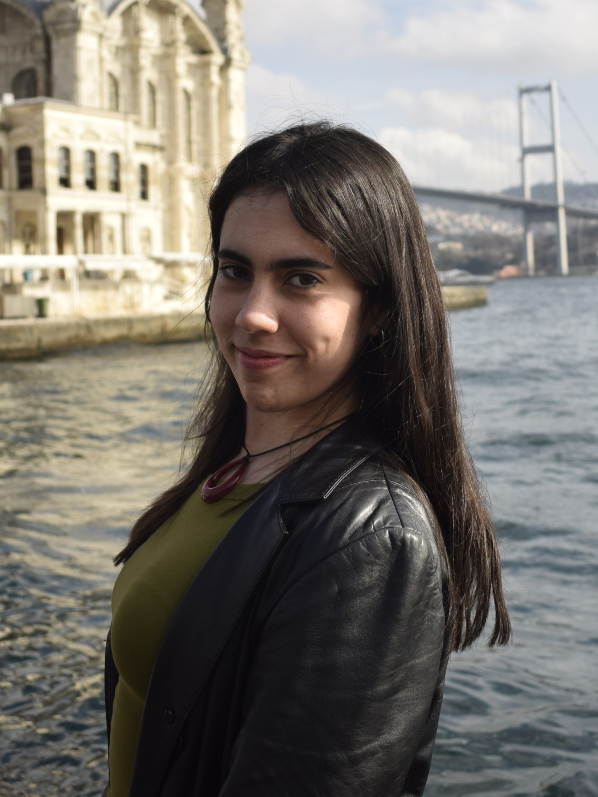
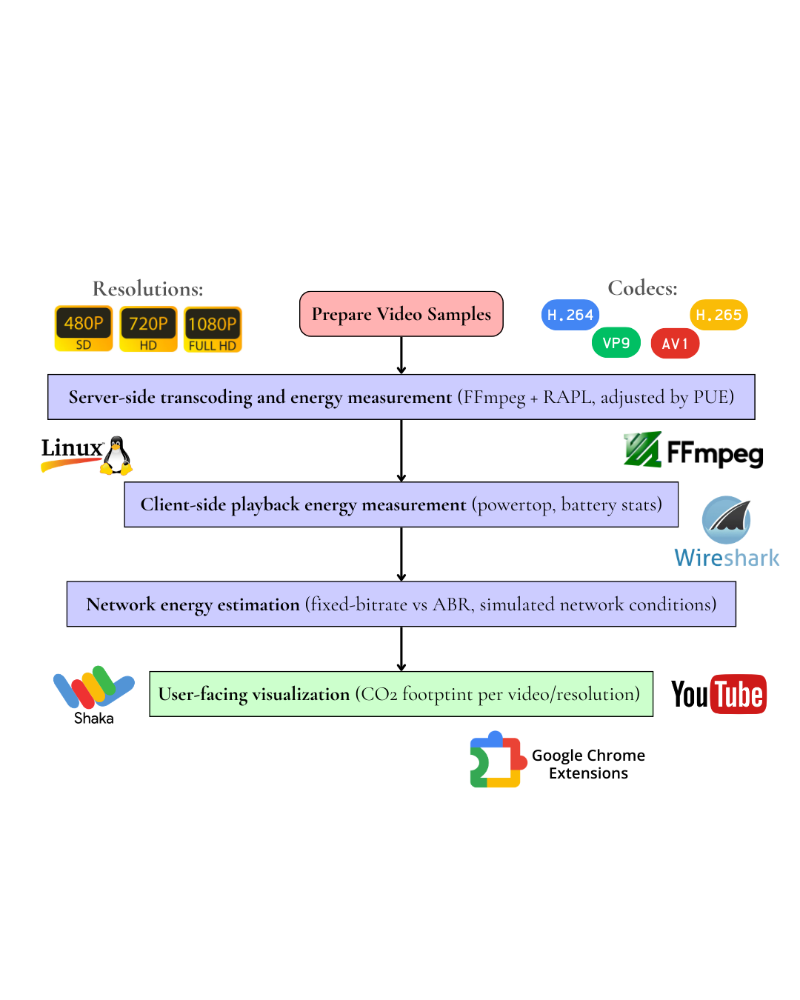
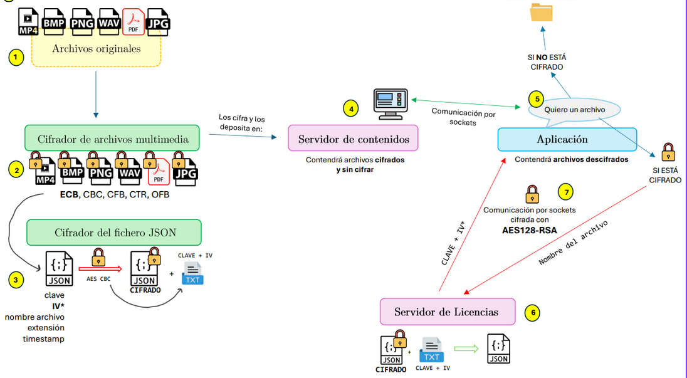
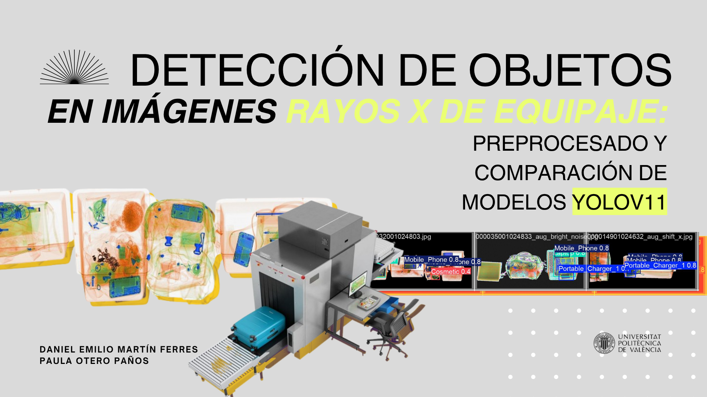
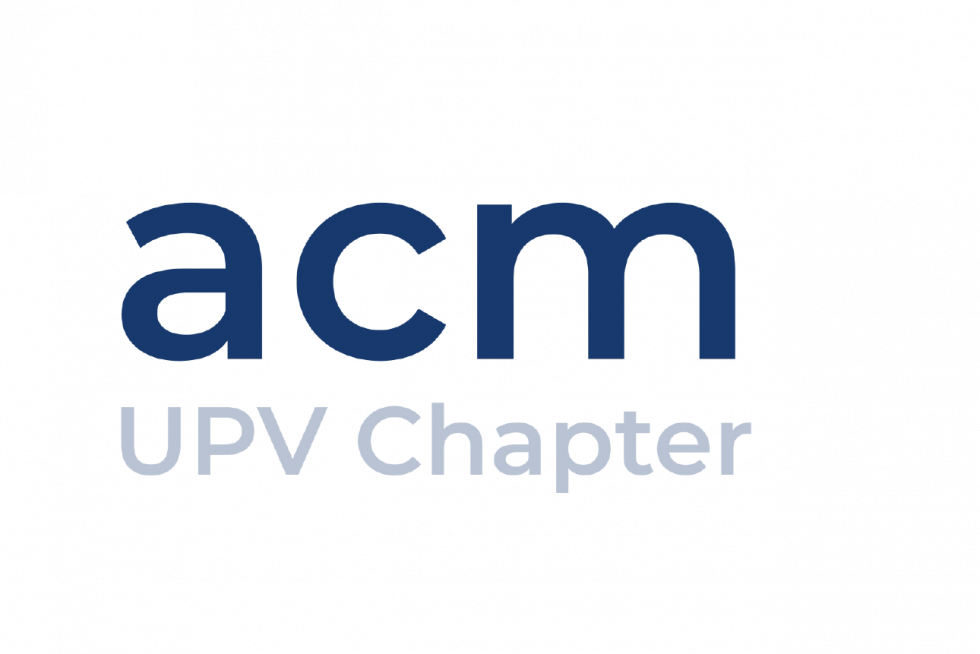
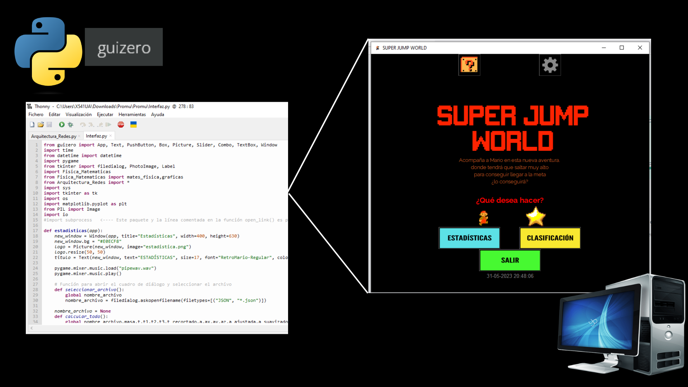

Portfolio · 2026
Computer Science & Digital Multimedia Technologies student with a passion for cybersecurity, sustainable computing, and building things that actually work.
Currently in Ljubljana, Slovenia (Erasmus) · Originally from Valencia, Spain
About me

Hi! I'm Paula, a Computer Science & Digital Multimedia Technologies student split between two universities, UPV in Valencia and the University of Ljubljana, where I'm currently on Erasmus.
My interests sit at the intersection of cybersecurity, sustainability and systems. I care about understanding how things work at a low level, whether that's a network, an operating system or a video codec burning watts during streaming.
Outside of code I was involved in ACM UPV Chapter, Poliwood and Toma Uno, and I've volunteered as an Erasmus mentor. I like leading, teaching, and getting things done.
Technical skills
Academic interests
Languages
Experience
IT Support Technician
Polytechnic University of Valencia (UPV)
COE Specialist – Large Enterprises Office
Banco Sabadell
Projects

Research · University of Ljubljana
Conducted an energy consumption analysis of video codecs across the complete streaming workflow: transcoding, client playback, and network transmission. Implemented measurements using Linux and Intel RAPL for accurate energy profiling. Report and poster submitted to the ICT4S 2026 for Sustainability conference.

Security · University Project
Designed and implemented a secure DRM architecture from scratch including a content server, license server and management interface. Applied hybrid encryption (RSA + AES-128), digital watermarking for content traceability and digital signatures to validate license requests. The system protected and securely delivered multimedia files such as video, audio, images and PDF documents.

Computer Vision · Deep Learning
Preprocessing pipeline and comparative evaluation of YOLOv11 (n, m, l, x) on the HiXray airport security dataset. Our YOLOv11m outperformed all domain-specific baselines (SSD, FPN, PANet, MuBo) by over 17 percentage points.

Web · ACM UPV Chapter
Responsible during the course 2024-2025 for the ongoing maintenance and updates of the official ACM UPV Chapter website, keeping content current and the platform running smoothly for the university's computing community.

Interdisciplinary · PROMU · 1st year
4-subject interdisciplinary project integrating a Python desktop GUI, a custom TCP protocol, numerical signal processing, and jump biomechanics into one application, analysing real human jumps via smartphone accelerometer with 3% error vs Tracker video validation.
Education
BSc in Computer Science
University of Ljubljana
BSc in Digital and Multimedia Technology
Polytechnic University of Valencia (UPV)
Contact
I'm open to internships, research collaborations and interesting projects, especially anything touching cybersecurity, sustainable computing and codec efficiency or multimedia systems. Drop me a message and I'll get back to you.